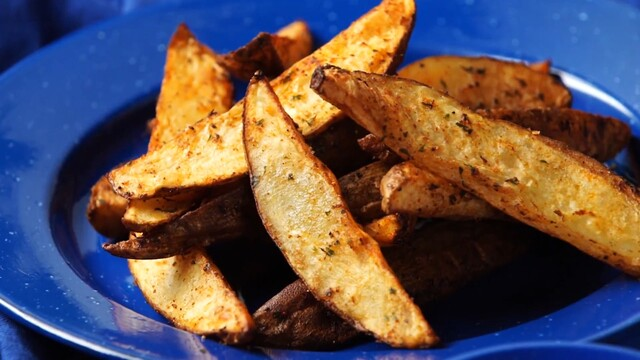

Chicken

Air Fryer Recipes
Wondering what to cook in an air fryer? Find easy recipes for air fried chicken, shrimp, fries and so much more!
Ingredients
- Dried Potatoes
- Olive Oil
- Seasoned Salt
- Paprika
- Dried Italian Seasoning
Steps
- In a large bowl, combine the potatoes, olive oil, seasoned salt, paprika and Italian seasoning. Toss well to combine.
- Heat an air fryer to 400 degrees for 2 minutes. Place the potatoes in the basket and cook for 10 minutes. Removing the basket and shake the potatoes. Return the potatoes to the air fryer for 8-10 more minutes, until crispy on the outside and tender on the inside. Serve immediately.